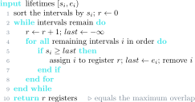
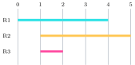

Method
- Compatibility graph: one vertex per operation, an edge between two operations of the same type that do not overlap in time. A clique is a set of operations that can share one unit. Minimum units = minimum clique partition.
- Conflict graph: the complement; minimum units = chromatic number (graph colouring).
- Registers: a value lives from the cycle it is produced to its last use; two values conflict if their lifetimes overlap. Conflict graphs of intervals are interval graphs, colourable optimally in polynomial time by the left-edge algorithm: sort intervals by start; repeatedly fill one register with non-overlapping intervals taken left to right.
- Sharing adds multiplexers at the unit inputs and register inputs: their area and delay limit how much sharing pays.
Algorithm

Picture

Five values, at most three alive at once: three registers.
Intuition
Sharing is time-slicing hardware: the same multiplier is the "first multiplication" in cycle 1 and the "fourth" in cycle 3.
Pitfall
Binding interacts with scheduling and with wiring: a sharing that minimises units can maximise multiplexers and long wires, so the best area is not always the fewest units.